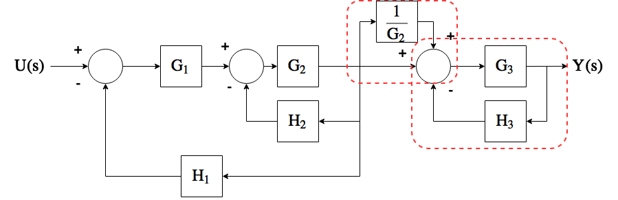
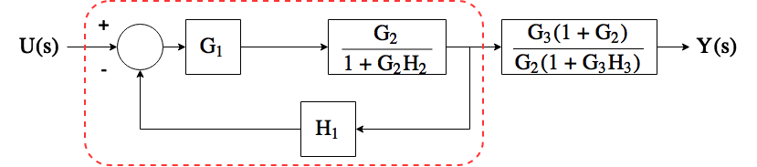

EECS 460 Discussion
Winter 2017
Introduction
Jonas Kersulis, GSI
kersulis@umich.edu- PhD student of Dr. Ian Hiskens
- Power and Energy major
- Controls minor
Meta
Office hours in EECS 2420
- Tuesday 3-4 PM (day before hw due, hour before discussion)
- Friday 1-2 PM (4th day covered)
Discussion format
- Review and motivation
- Problems to illustrate major concepts (similar to hw problems)
- Your hw problem questions
At times I will encourage you to solve problems in groups.
Requests welcome, e.g. if you're studying for the midterm and something isn't making sense, let me know and I'll make time for it.
I will post discussion notes after Monday's discussion. (No need to copy slides during discussion.)
Week 1 | 2017-01-09/10
- Control system representations
- Laplace transform
- Partial fractions
Motivation
- Describe systems using mathematics
- Work in frequency domain:
- Common operations become easier
- Closer to intuitive block form
- Transfer function: input/output relationship is algebraic
Laplace transform: tool for going from time domain to frequency domain
$\mathcal{L}\{f(t)\} = F(s) = \int_{0^-}^\infty f(t)e^{-st}dt$Ex. if $f(t) = e^{-at}u_s(t)$, $F(s) = \frac{1}{s+a}$
| Step | Tool |
|---|---|
| 1. Express system using diff. eq. | Physics |
| 2. Take $\mathcal{L}\{\cdot\}$ | Transform table |
| 3. Analyze | Algebra |
| 4. Take $\mathcal{L}^{-1}\{\cdot\}$ to obtain time signal | Partial fractions, transform table |
Problems
- Given $F(s) = \frac{2}{(s+1)(s+2)}$, find $f(t)$.
- Given $F(s) = \frac{1}{s^2 + 6s + 9}$, what is $f(t)$?
- Given a system with input $u(t)$, output $y(t)$, and dynamics given by $$\frac{d^3y(t)}{dt} + 12\frac{d^2y(t)}{dt} + 32\frac{dy(t)}{dt} = 32u(t),$$
a. Find the transfer function.
b. Solve for the output $y(t)$ given the input $u(t) = u_s(t)$.
Assume zero initial conditions.
Week 2 | 2017-01-17
- Control system representations for more complicated systems
- State-space <--> transfer function
- Block diagram reduction
Motivation
- Often we have several states and multiple inputs or outputs.
- We also frequently encounter complex systems best expressed with block diagrams.
We still want to be able to find transfer functions.
Tools:
- State-space representation
- Block diagram reduction
From lecture

From lecture

Problem 1
Part A: find a state-space representation of the transfer function:

Part B: find a state-space representation of the transfer function:
Problem 2
Go the other way: find the transfer function for the following state-space representation.
$$ \begin{align} \begin{bmatrix} \dot{x}_1 \\ \dot{x}_2 \\ \dot{x}_3 \end{bmatrix} &= \begin{bmatrix} 0 & 1 & 0 \\ 0 & 0 & 1 \\ -a_3 & -a_2 & -a_1 \end{bmatrix}\begin{bmatrix} x_1 \\x_2 \\x_3 \end{bmatrix} + \begin{bmatrix} 0 \\ 0 \\ 1 \end{bmatrix}u \\ y &= \begin{bmatrix} b_2 & b_1 & b_0 \end{bmatrix}\begin{bmatrix} x_1 \\ x_2 \\ x_3 \end{bmatrix} \end{align} $$Problem 3
Reduce the block diagram and write its transfer function.

Week 3 | 2017-01-23
- Signal flow graphs and Mason's gain formula
- Compare to block diagram reduction for finding transfer functions
- Linearization
Motivation
Signal flow and Mason's gain formula- Block diagram reduction is messy, and when we want multiple transfer functions, we must reduce multiple times. Gross.
- A signal flow diagram encodes the same system information.
- Mason's gain formula allows us to read off reusable values and combine them to find multiple transfer functions efficiently. No more system rewriting!
Linearization allows us to apply our powerful linear analysis tools to nonlinear systems locally. This is often enough to classify stability of equilibria, and even to design controllers.
Problem 1
Find the transfer function $\frac{E(s)}{U(s)}$.
Problem 2
Part A
Use block diagram reduction to find the transfer function $\frac{Y(s)}{U(s)}$.
Step 1
Step 2
Step 3
Step 4
Step 5

Step 6
Part B
Find the same transfer function using Mason's gain formula.
Problem 3
Consider the following nonlinear circuit:
Voltage across the nonlinear resistor is related to current as follows: \begin{align*} i(t) &= 2e^{0.1V_R(t)}. \end{align*} Find the differential equation modeling the circuit, then linearize any nonlinear terms. Assume a nominal input of $V_N(t) = 0$.
Week 4 | 2017-01-30/31
- BIBO stability
- Linearization
- Steady-state error
Motivation
- Stability is a key feature of control systems
- Assess in frequency domain -- no need to try various inputs or simulate time domain behavior
- Another linearization example to drive home the process. Make sure you're comfortable with linearization.
- Steady-state error: how well will our control systems track various inputs?
Problem 1
Determine stability of the following closed-loop systems. If given, $M(s)$ is the closed-loop transfer function.Part A $$M(s) = \frac{3}{s(s+1)(s+2)}$$
Part B

where $G_1(s) = \frac{7}{2s+1}$.
Part C
 where $G_2(s) = \frac{7K}{2s+1}$ (answer should be in terms of $K$).
where $G_2(s) = \frac{7K}{2s+1}$ (answer should be in terms of $K$).
Problem 2
Consider the system modeled by the following differential equation: \begin{align*} \frac{d^2\theta}{dt^2} + K\frac{d\theta}{dt} + \cos \theta &= u(t) \end{align*} The applied input is $u(t)$, the output is $\theta$, and we are interested in changes around the nominal input value $u_N = 0$.Part A
Linearize the system to obtain a small-signal state-space model.
Part B
Find the transfer function of the linearized state-space model.
Part C
Comment on the stability of $G(s)$ from Part B.
Part D
Now comment on the stability of the closed-loop system below, where $G(s)$ is the transfer function computed in Part B.

Problem 3
Consider a unity-feedback system with forward path transfer function $G(s) = \frac{1}{s(s+2)}$ Find the steady-state error for step, ramp, and parabolic inputs.
Week 5 | 2017-02-06/07
Second-order systems (GK section 5-6)
- Prediction of qualitative responses
- Designing to meet specs
- Previously looked at steady-state response ($t\to\infty$).
- Now looking at transient response ($t$ near 0).
Second-order system
\begin{align} \frac{Y(s)}{R(s)} &= \frac{\omega_n^2}{s^2 + 2\zeta\omega_ns + \omega_n^2} \end{align}
Step response: $$ y(t) = 1 - \frac{e^{-\zeta\omega_nt}}{\sqrt{1 - \zeta^2}}\sin\left(\omega_n\sqrt{1-\zeta^2}t + \arccos\zeta\right),~t\geq 0 $$
Poles: \begin{align} s_1,s_2 &= -\zeta\omega_n\pm j\omega_n\sqrt{1 - \zeta^2} = -\alpha \pm j\omega \end{align}
Poles: \begin{align} s_1,s_2 &= -\alpha \pm j\omega \\ \alpha &= \zeta\omega_n \\ \omega &= \omega_n\sqrt{1-\zeta^2} \end{align}
- $\alpha$ is the damping factor
- $\zeta$ is the damping ratio
- $\omega_n$ is the undamped natural frequency
- $\omega$ is the damped frequency

Overshoot and peak time
From GK Section 5-6-3, percent maximum overshoot is $$ 100e^{-\pi\zeta/\sqrt{1-\zeta^2}} $$
Peak time is $$ t_\text{max} = \frac{\pi}{\omega_n\sqrt{1-\zeta^2}} $$
Addition of poles and zeros
Read GK Section 5-9! Also good to play with systems in MATLAB.
Problems
Problem 1
Consider the following mechanical system:
where $x(t)$ is displacement (and also output), $f(t)$ is the applied input with nominal $f_N = 10N$, and the nonlinear spring applies a force $f_s(t) = 2x_s^2(t)$.